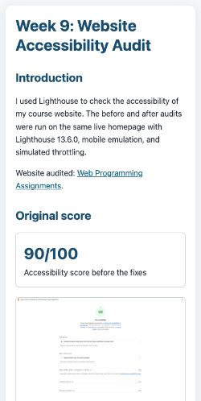

Week 9 Monday: Performance & SEO
This report uses Lighthouse 13.6.0 on the existing portfolio and its Week 9 accessibility report. Results below are from saved audit files; local preview results are labeled separately from the deployed baseline.
Test setup
- Deployed website: Web Programming Assignments.
- Audit pages: the deployed homepage baseline; local before-and-after audits of the Week 9 accessibility report page; and a final local audit of the homepage.
- Run date: November 4, 2026 (JST); Lighthouse 13.6.0, mobile emulation, 412 × 823 viewport, device scale factor 1.75, simulated throttling.
- Before/after report-page audits used the same local preview URL. The deployed homepage baseline and local final audit are separate runs and are labeled as such.
Original results
The deployed homepage audit scored Performance 100, Accessibility 100, Best Practices 96, and SEO 100. Its FCP was 0.8 s, LCP 0.8 s, Speed Index 1.1 s, TBT 0 ms, and CLS 0. It had no failed Performance audits. It did request https://vision123-hub.github.io/favicon.ico, which returned 404.
A separate local baseline audit of the Week 9 report scored Performance 100, Accessibility 100, Best Practices 96, and SEO 91. FCP was 0.6 s, LCP 0.8 s, Speed Index 0.6 s, TBT 0 ms, and CLS 0.
Five confirmed findings on the report page were: (1) the LCP screenshot was lazy-loaded and lacked high fetch priority; (2) the 1600 × 1200 before screenshot was oversized for its mobile display; (3) the after screenshot was also oversized; (4) the page requested a missing favicon; and (5) it had no meta description. Lighthouse estimated 152 KiB of image savings across both screenshots, displayed at about 606 × 454 on the emulated mobile viewport.
The homepage itself already scored 100 for Performance and had no failed Performance audits. These five findings belong to the separate Week 9 report-page audit, not the homepage.
Verified changes made
- Load the above-the-fold “before” screenshot eagerly to resolve the lazy-loaded LCP image finding.
- Set
fetchpriority="high"on that LCP screenshot. - Serve a 640-pixel responsive source for the before screenshot.
- Serve a 960-pixel responsive source for the before screenshot on wider displays.
- Serve 640-pixel and 960-pixel responsive sources for the after screenshot; keep that below-the-fold image lazy-loaded.
- Add the correct relative favicon to the report page.
- Add a descriptive meta description to the report page.
The before and after screenshots are unchanged full-resolution originals. The 640-pixel and 960-pixel derivatives are separate responsive assets.
After audit and reflection
The local report-page after audit scored 100 in Performance, Accessibility, Best Practices, and SEO. FCP was 0.6 s, LCP 1.1 s, Speed Index 0.6 s, TBT 0 ms, and CLS 0. A repeated run returned the same metrics. The first run's LCP was 0.3 s slower than the baseline, so this audit does not show an LCP time improvement even though the LCP discovery finding cleared.
The two downloaded responsive screenshots transferred 35,274 bytes and 33,292 bytes, down from 95,653 bytes and 86,241 bytes for the originals in the baseline run (about 110.7 KiB less combined). Lighthouse's image-delivery insight still estimated 47 KiB of additional savings from the 640-pixel files. Its cache-lifetime insight estimated 67 KiB, but the local preview server did not set cache headers; this cache result is a testing limitation, not a confirmed GitHub Pages issue.
The final local homepage audit scored 100 in all four categories: Performance, Accessibility, Best Practices, and SEO. FCP, LCP, and Speed Index were each 0.8 s; TBT was 0 ms and CLS was 0. Local tests do not verify the currently deployed GitHub Pages version.
Reflection: responsive sources substantially reduced the actual image bytes requested, and the LCP, favicon, and SEO audit findings cleared. The Performance score was already 100 and remained 100; the slower LCP timing and remaining image/cache estimates show why a perfect category score does not mean every opportunity is gone.
